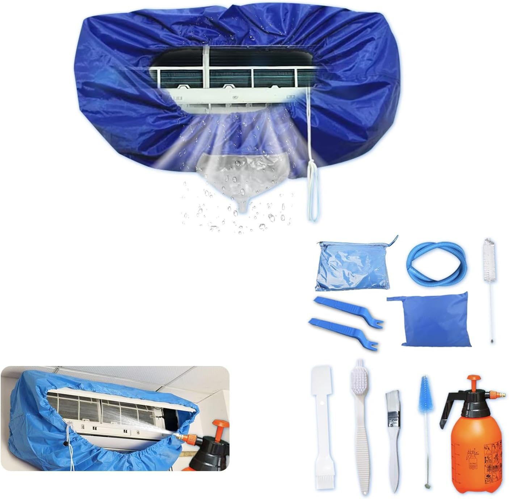

KIKEPILM
Kit di pulizia per condizionatori d'aria split Kikepilm da 12 pezzi con bottiglia da 2 litri, kit di pulizia per condizionatori d'aria a parete (vetro blu, grande)
39,80 €
Prezzo KIKEPILM, IVA inclusa
| Marca | KIKEPILM |
| Modello (ASIN) | B0F1VBK89W |
| Colore | Glass Blue |
| Taglia | Large |
| Prezzo | 39,80 € |
| Valuta | EUR |
Acquisto, spedizione e reso avvengono tramite Amazon.
Informazioni su questo articolo
- 1. Design unico, riutilizzabile: migliora la tua routine di manutenzione dell'aria condizionata con il nostro kit di pulizia per pompe di calore premium, appositamente progettato per soddisfare i requisiti unici delle pompe di calore mini split. Questo kit di alta qualità per la pulizia del condizionatore d'aria a parete è dotato di un sacchetto di pulizia multiuso riutilizzabile, che semplifica lo stoccaggio. Realizzato con materiali di alta qualità, è durevole ed efficiente, garantendo che il processo di pulizia del condizionatore d'aria sia completo e conveniente
- 2. Kit di pulizia mini split completamente aggiornato: 1 * sacchetto per la pulizia del condizionatore d'aria, 1 * spazzola per fessure a doppia testa (inclusa pala per scanalature), 2 * strumenti per aprire il fondo della custodia del condizionatore d'aria, 1 * spazzola appuntita, 1 * bottiglia d'acqua da 2 litri, 1 * spazzola per girante eolica, 1 * spazzola per la pulizia a doppia testa (anteriore e laterale), 1 * tubo dell'acqua, 1 * asciugamano, 1 * spazzola morbida, 1 * borsa portaoggetti, questo kit di pulizia del condizionatore d'aria montato a parete ha tutto il necessario per pulire un condizionatore d'aria impeccabile
- 3. Adatto a tutti i modelli di condizionatori d'aria da parete presenti sul mercato: il nostro [kit di pulizia della pompa di calore da parete] è disponibile in dimensioni medie e grandi, adatte a diversi modelli. Il suo design intuitivo consente di pulire facilmente tutto l'anno, raggiungendo ogni angolo e fessura senza tralasciare alcun punto. Questo mini kit per la pulizia delle fessure è un'aggiunta pratica ai tuoi strumenti di pulizia
- 4. L'installazione richiede solo 2 minuti e mezzo e i passaggi sono semplicissimi: il nostro kit per la pulizia del condizionatore d'aria è rapido e semplice da installare, richiede meno di 2,5 minuti. Non c'è bisogno di assumere un professionista: questa copertura per la pulizia della pompa di calore è progettata per la comodità dell'utente, rendendo il processo di pulizia senza sforzo. Il nostro efficiente servizio clienti è sempre disponibile per rispondere a qualsiasi domanda
- 5. La scelta migliore per la pulizia dell'aria condizionata: ogni accessorio del nostro kit di pulizia mini split è appositamente progettato per prestazioni ottimali. Dal kit di pulizia dell'aria condizionata murale al pulitore della pompa di calore, ogni componente è stato attentamente studiato e testato. Il kit di pulizia termopompa murale garantisce che il tuo condizionatore d'aria funzioni al massimo delle sue prestazioni e fornisca la migliore esperienza di pulizia. Questo mini kit di pulizia split con detergente è la soluzione definitiva per la pulizia del tuo sistema di aria condizionata ad alta efficienza